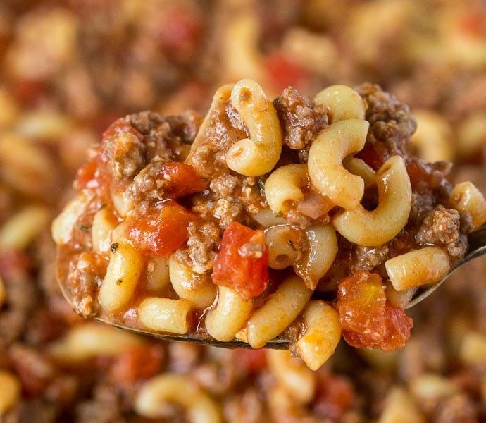

Goulash

Description:
An easy dinnertime recipe that takes only about 20 minutes to make.Using a few ingredients to make a hearty meal for the family after a long day at WORK.
Once you use this recipe you will add it to your weekly dinner list.
Ingredients:
- Tri Color Rotini
- Canned Stewed Tomatoes (12 oz)
- 1 lbs. Hamburger meat
- Garlic and Salt to taste
Steps:
- Boil a pot of water for the Rotini.
- While the Rotini is cooking brown the hamburger meat in a skillet.
- Once the hamburger meat is browned, set it aside.
- Strain the Rotini, place back in pot.
- Add the browned meat, can of stewed tomatoes, and salt and garlic to the pot of Rotini.
- Stir to combine then serve with buttered bread and Parmesean cheese.